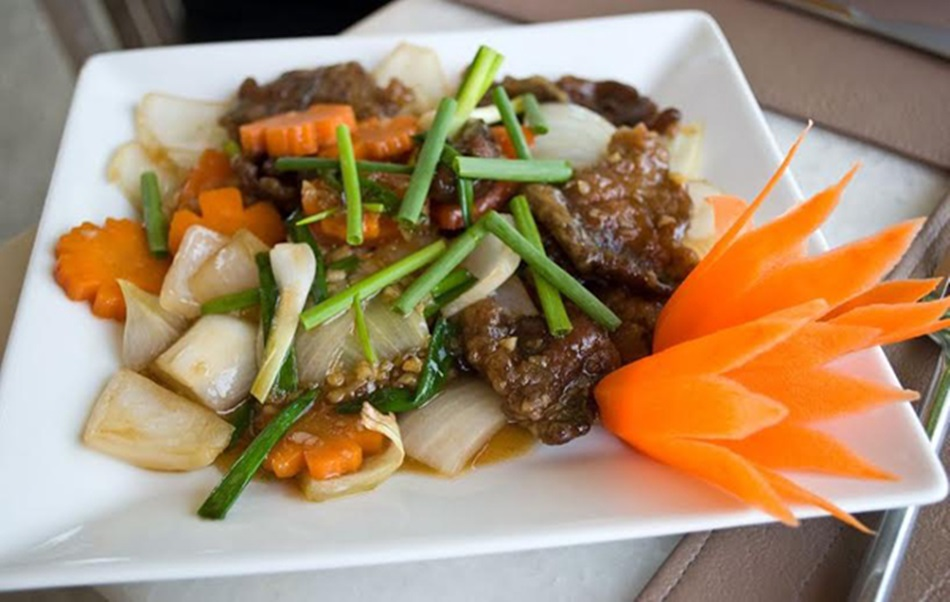

ประโยชน์ของผัดน้ำมันหอย
- ผักต่างๆ ในผัดน้ำมันหอยมีวิตามินและแร่ธาตุสูง ช่วยเสริมสร้างภูมิคุ้มกัน
- เนื้อสัตว์ให้โปรตีน ช่วยซ่อมแซมส่วนที่สึกหรอของร่างกาย
- น้ำมันหอยมีรสชาติกลมกล่อม ช่วยเพิ่มรสชาติอาหาร
- มีผักหลากหลายชนิดที่ให้ใยอาหาร ช่วยในการขับถ่าย
- เป็นเมนูที่ทำง่ายและรวดเร็ว เหมาะสำหรับคนที่มีเวลาน้อย
ส่วนประกอบ
- เนื้อสัตว์ (หมู, ไก่, หรือเนื้อ) 300 กรัม
- ผักต่างๆ (คะน้า, บรอกโคลี, เห็ด, แครอท) 200 กรัม
- กระเทียมสับ 1 ช้อนโต๊ะ
- น้ำมันหอย 2 ช้อนโต๊ะ
- ซีอิ๊วขาว 1 ช้อนโต๊ะ
- น้ำตาลทราย 1 ช้อนชา
- น้ำมันพืช 1 ช้อนโต๊ะ
ประโยชน์ที่จะรับ
| ส่วนประกอบ |
พลังงาน (kcal) |
โปรตีน (g) |
ไขมัน (g) |
คาร์โบไฮเดรต (g) |
| เนื้อสัตว์ 300 กรัม |
300 |
50 |
10 |
0 |
| ผักต่างๆ 200 กรัม |
100 |
5 |
2 |
15 |
| น้ำมันหอย 2 ช้อนโต๊ะ |
30 |
1 |
2 |
5 |
| ซีอิ๊วขาว 1 ช้อนโต๊ะ |
15 |
1 |
0 |
3 |
| น้ำตาลทราย 1 ช้อนชา |
20 |
0 |
0 |
5 |
| น้ำมันพืช 1 ช้อนโต๊ะ |
120 |
0 |
14 |
0 |
| รวม |
585 kcal |
57 g |
28 g |
28 g |
วิธีการทำ
- เตรียมวัตถุดิบ: หั่นเนื้อสัตว์และผักเป็นชิ้นพอดีคำ สับกระเทียม
- ตั้งกระทะให้ร้อน ใส่น้ำมันพืชลงไป
- ใส่กระเทียมสับลงไปผัดให้หอม
- ใส่เนื้อสัตว์ลงไปผัดให้สุก
- ใส่ผักต่างๆ ลงไปผัดให้เข้ากัน
- ปรุงรสด้วยน้ำมันหอย ซีอิ๊วขาว และน้ำตาลทราย
- ผัดให้เข้ากัน ชิมรสตามชอบ
- ตักเสิร์ฟพร้อมข้าวสวยร้อนๆ